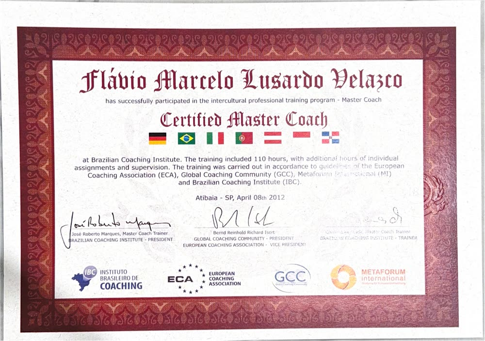
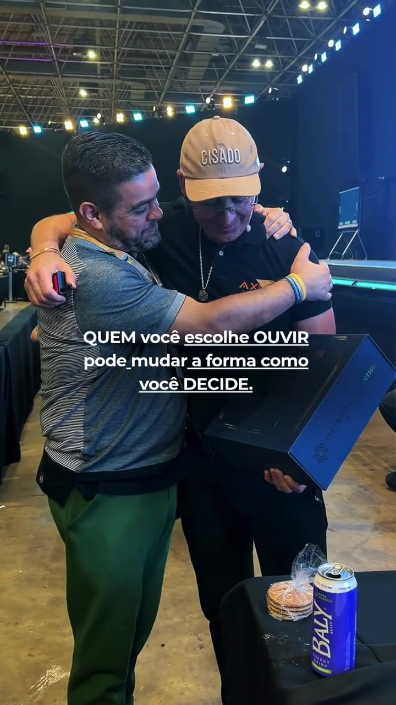
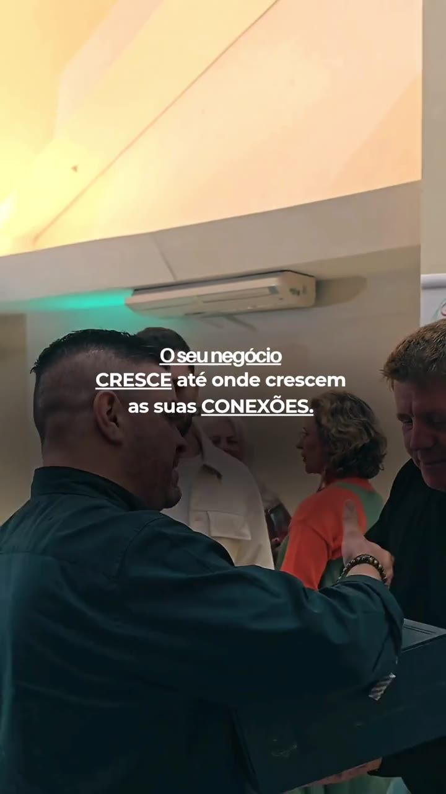
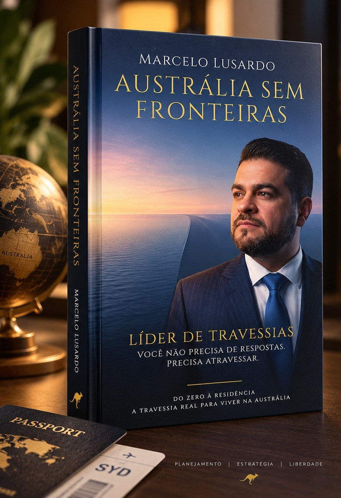

Enxergue seu Estado A
Reconheça forças, limitações, crenças, prioridades e os principais desequilíbrios da sua vida ou operação.
Para quem deseja transformar a vida, a carreira ou um negócio: identifique seu ponto de partida, escolha a direção e construa um mapa estratégico com metas, indicadores e ações reais.
Autoconhecimento + planejamento estratégico + execução acompanhada
O Método Líder de Travessias foi estruturado para converter reflexão em direção prática. O resultado depende da aplicação e das circunstâncias de cada pessoa ou empresa.
Reconheça forças, limitações, crenças, prioridades e os principais desequilíbrios da sua vida ou operação.
Transforme desejos genéricos em objetivos estratégicos e metas claras, com horizonte e critérios de sucesso.
Construa um Mapa Estratégico da Pessoa ou do Negócio, conectando objetivos e relações de causa e efeito.
Organize iniciativas, prioridades, responsáveis e prazos em um plano de ação aplicável à sua realidade.
Use indicadores e revisões periódicas para identificar avanços, gargalos e a necessidade de ajustar a rota.
Fortaleça sua capacidade de decidir, executar, liderar e desenvolver um legado coerente com seus valores.
Para recomeços, transições de carreira, propósito, hábitos, equilíbrio, liderança pessoal e mudanças de país.
Entregáveis: diagnóstico, Roda das Travessias, Estado A/B, objetivos, indicadores e Mapa Estratégico Pessoal.
Para empreendedores, gestores e líderes que precisam alinhar visão, posicionamento, prioridades, equipes e execução.
Entregáveis: diagnóstico estratégico, objetivos, KPIs, iniciativas, responsáveis e mapa de execução empresarial.
Visualize a aplicação do método em duas modalidades: Pessoal, com 12 dimensões da vida, e Empresarial, com perspectivas de gestão. Cada mapa conecta o Estado A aos objetivos, indicadores, iniciativas e ao Estado B desejado.
12 dimensões para identificar prioridades, alinhar escolhas e acompanhar a evolução da vida com indicadores.
Exemplos de objetivos: construir reserva financeira, fortalecer hábitos de saúde e desenvolver competências profissionais.
6 perspectivas para conectar pessoas, processos, clientes e resultados em uma estratégia executável.
Exemplos de objetivos: elevar conversão, melhorar margem operacional e desenvolver a liderança.
Alterne entre Pessoal e Empresarial no painel abaixo. Explore as dimensões, as metas e os indicadores demonstrativos.
Dados e indicadores ilustrativos, sem representação de resultados reais. A construção personalizada acontece na mentoria. Abrir o dashboard em tela cheia.
O aplicativo do Método Líder de Travessias reúne a jornada do mentorado em um ambiente digital: diagnósticos, objetivos estratégicos, indicadores e plano de ação.
A tela ao lado é uma representação conceitual, não uma captura de tela autenticada. Funcionalidades disponíveis dependem da versão atual do aplicativo.
Visualização ilustrativa · Dados fictícios
A trajetória de aplicação de ferramentas de planejamento e desenvolvimento de Marcelo remonta a 2009. O Método Líder de Travessias integra autoconhecimento e práticas de gestão estratégica, incluindo a lógica do Balanced Scorecard (BSC), de Robert Kaplan e David Norton — um dos modelos mais influentes da gestão moderna — adaptada à pessoa e aos negócios.
A metodologia própria integra conceitos de gestão e desenvolvimento humano. O BSC é atribuído aos seus criadores, Kaplan e Norton; não se afirma afiliação ou endosso por eles.
Uma experiência para identificar sua travessia, compreender a metodologia e sair com as primeiras prioridades organizadas.
Preço em estudo: R$ 97. Inscrições ainda não abertas neste ambiente de teste.
Encontros semanais, diagnóstico, objetivos, mapa estratégico e plano de execução. Uma jornada de desenvolvimento com ferramentas e acompanhamento.
Com vivência e conexões internacionais em mais de 40 países, Marcelo conecta sua trajetória empresarial e multicultural a uma abordagem estratégica para quem pretende estudar, trabalhar ou empreender em outro país.
Organize objetivos acadêmicos, orçamento, prazos e critérios para avaliar destinos e instituições.
Planeje qualificação, posicionamento profissional, idioma e próximos passos de sua trajetória.
Estruture prioridades, análise de mercado, parceiros e metas para explorar oportunidades internacionais.
O método oferece planejamento e suporte estratégico. Orientação migratória, jurídica ou regulatória depende de profissionais devidamente habilitados no país de destino.
Para quem escolhe a Austrália, a Plataforma Digital Austrália Sem Fronteiras reúne conteúdos e orientações educacionais específicos do destino. O Método Líder de Travessias complementa essa jornada com diagnóstico, estratégia pessoal ou empresarial e acompanhamento de metas.
Se o destino for outro país, o mesmo método pode apoiar o planejamento, com encaminhamento a especialistas parceiros quando necessário.

Administrador, pós-graduado em Coaching e Gestão de Pessoas, Master Coach, empreendedor e diretor de operações em educação internacional. Sua trajetória reúne tecnologia, CRM, liderança, planejamento estratégico e atuação empresarial entre Brasil e Austrália.
Desde 2009, desenvolve e aplica ferramentas de gestão e desenvolvimento. Sua experiência internacional inclui vivências e conexões em mais de 40 países, além da própria travessia de estudante internacional a cidadão australiano.
É fundador de projetos ligados a educação, conteúdo e desenvolvimento humano, incluindo o canal NoSoFarAway, o movimento Austrália Sem Fronteiras e o Método Líder de Travessias.

Entre suas formações estão Dale Carnegie, IBC, Master Coaching, Método CIS e programas de liderança e desenvolvimento. Em 2026, recebeu o título de Imortal da Academia Independente de Letras, cadeira nº 836 — “A Travessia”.




Registros audiovisuais da trajetória e das conexões profissionais de Marcelo. Nesta prévia, exibimos os materiais de apresentação; os vídeos originais serão habilitados na versão final.

Conexões sobre desempenho, empreendedorismo e desenvolvimento.

Encontros relacionados a coaching e desenvolvimento humano.

Reflexões sobre mentalidade, decisões e realização.
A presença dessas pessoas em registros e vídeos não representa certificação, parceria formal ou endosso ao Método Líder de Travessias.
O livro registra experiências, aprendizados e decisões de uma trajetória real de transformação internacional. Mais do que um produto, é parte do legado pessoal e profissional de Marcelo e uma referência para a origem do movimento Austrália Sem Fronteiras.
É um reconhecimento da caminhada que inspirou a construção de um método aplicável a muitas outras travessias — pessoais, profissionais, empresariais e globais.
Nesta página, o livro é apresentado como parte da biografia, sem direcionamento para checkout ou plataforma de vendas.

O primeiro passo não é mudar tudo de uma vez. É definir o que importa, escolher uma direção e começar a executar com método.